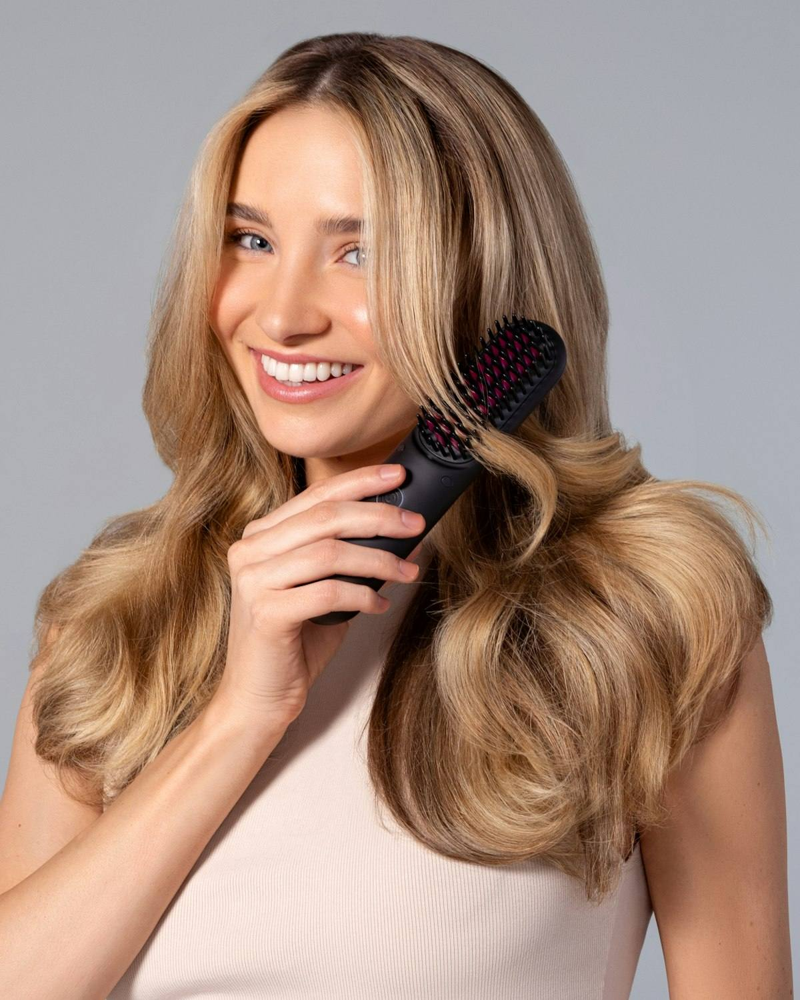

Пористость
Впитывает и отдаёт
Как быстро волос набирает влагу и как быстро её теряет. От этого зависит, удержит он состав или смоет его за пару недель.
Диагностика
Бесплатно — по фото или в студии. Сначала я смотрю, что происходит с вашими волосами и кожей головы, и только потом говорю, нужна ли вообще процедура.
ID волос
ID — это identity, свойства именно ваших волос. Одна и та же процедура на разных волосах ведёт себя по-разному, поэтому я смотрю четыре вещи.
Впитывает и отдаёт
Как быстро волос набирает влагу и как быстро её теряет. От этого зависит, удержит он состав или смоет его за пару недель.
Сколько и какие
Сколько волос на площади и какой они толщины. Тонким и густым нужно разное, хотя со стороны они могут выглядеть похоже.
Что было раньше
Чем и как часто осветляли и красили. Чаще всего именно это объясняет ломкость, которую приписывают последней процедуре.
Корни и кожа
Жирность, чувствительность, шелушение. Часть жалоб на длину начинается у корней — и тогда трогать длину бессмысленно.
Из этих четырёх складывается ID, и уже под него подбираются процедура и домашний уход. Поэтому на один и тот же вопрос двум разным людям я отвечаю по-разному.
Фото
Это не регламент, а обычный здравый смысл: на тёмном селфи под лампой не видно ни пористости, ни состояния концов — и разбирать нечего.
Снимайте днём у окна, без вспышки и без фильтров. Жёлтая лампа врёт про цвет, вспышка съедает текстуру, а фильтр заодно «чинит» волосы, которые надо разобрать.
Мокрые всегда выглядят лучше, чем есть: они гладкие и блестят. Мне нужны сухие и расчёсанные — то, с чем на самом деле предстоит работать.
Первый — общий, во всю длину со спины. Второй — крупно концы, прядь в руке. Если беспокоит кожа головы, добавьте третий: пробор с близкого расстояния.
Фото не заменяет осмотр: по нему я не потрогаю волос и не увижу, как он тянется во влажном виде. Но фото хватает, чтобы понять направление и не звать вас в студию зря.

Ответ
Отвечаю я сама: в студии я работаю одна.
Честно
Иногда с волосами всё в порядке, а дело в шампуне, в жёсткой воде или в том, как их сушат. Тогда я так и скажу и не стану предлагать процедуру.
После разбора вы ничего не должны: ни записываться, ни объяснять причину. Бесплатна диагностика и по фото, и в студии — это не пробник, а способ не тратить деньги вслепую.
Кто будет смотретьЧтобы вы понимали границы:
Когда я вижу медицинскую историю, я направляю к врачу и жду его заключения. Это не отговорка, а единственный честный порядок.
Написать
WhatsApp или Telegram по одному номеру: 8 994 426-99-44. Удобнее вживую — приезжайте, в студии диагностика тоже бесплатная.
Точный адрес и ориентиры я присылаю после записи. Как доехать из Токсово, Лесколово, Девяткино и с Парнаса — на странице о дороге.